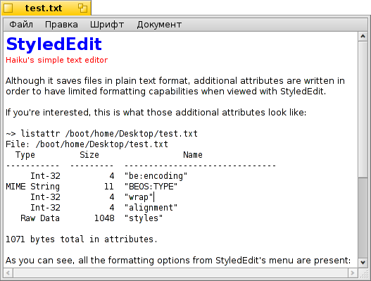

Русский
Русский Français
Français Deutsch
Deutsch Italiano
Italiano Español
Español Svenska
Svenska 日本語
日本語 Українська
Українська 中文 ［中文］
中文 ［中文］ Português
Português Suomi
Suomi Slovenčina
Slovenčina English
English StyledEdit
StyledEdit
| Расположение в Deskbar: | ||
| Расположение в Tracker: | /boot/system/apps/StyledEdit | |
| Настройки хранятся по адресу: | отсутствуют |
StyledEdit - простой текстовый редактор, он сохраняет файлы в виде обычного текста, но через добавление к ним дополнительных атрибутов имеет некоторые возможности по форматированию, которые будут видны только при открытии файла в StyledEdit.
Если интересно, то эти дополнительные атрибуты можно просмотреть через Terminal при помощи команды listattr:
~> listattr /boot/home/Desktop/test.txt
File: /boot/home/Desktop/test.txt
Type Size Name
----------- --------- -------------------------------
Int-32 4 "be:encoding"
MIME String 11 "BEOS:TYPE"
Int-32 4 "wrap"
Int-32 4 "alignment"
Raw Data 1048 "styles"
1071 bytes total in attributes.
Как видите, все параметры форматирования из меню StyledEdit здесь присутствуют: перенос строк (вкл/выкл) и выравнивание (по левому краю/по центру/по правому краю), каждый в своём атрибуте. Стили (шрифт, размер, цвет) каждого документа совмещены в одном отдельном атрибуте.
Таким образом, имеется возможность делать текст цветным с различными шрифтами и их размером, но при этом файл так и остаётся остаётся обычным текстовым файлом. Поэтому ReadMe.txt, к примеру, остаётся читаемым в любой ОС, но в Haiku будет выглядеть красивее и удобнее для восприятия.
Работать в StyledEdit очень просто, поэтому мы пропустим описание каждого пункта в меню. Напишите нужный текст, выделите его часть, которую собираетесь форматировать и примените к ней нужные шрифт, его цвет и размер в меню . Перенос строки и выравнивание в меню возможно применить только ко всему файлу целиком.